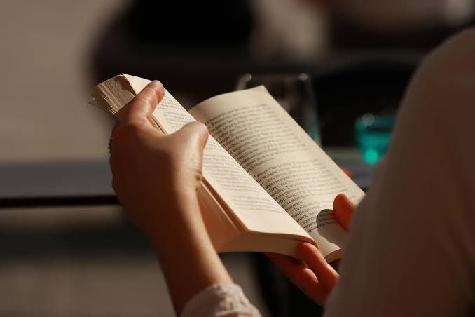
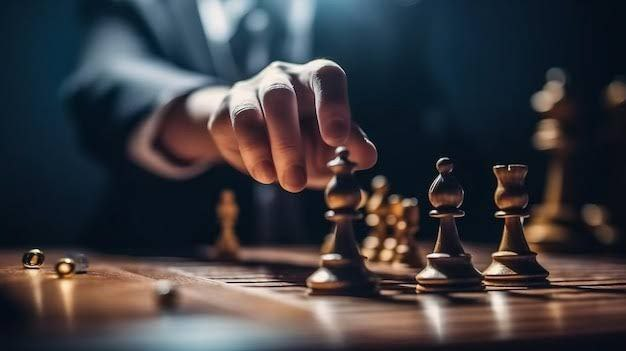
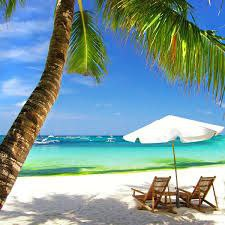

My name is Abdinajiib Abdirahman. I am a passionate and curious
student currently learning how to design and build websites using
HTML, CSS, and JavaScript. I have always been interested in
technology, especially how websites and apps are created.
I spend most of my time exploring new tools, watching tutorials, and
trying out different web design techniques. I believe that learning
web development can open up many opportunities for me in the future,
whether it's creating my own projects or working with others to build
useful applications.
My long-term goal is to become a skilled full-stack web developer who
can create responsive, user-friendly, and secure websites.
My Hobbies
Reading Books
Coding
Playing Chess
1:Reading Books

Reading Book
One of my favorite hobbies is reading. I enjoy reading books about
science, technology, personal development, and history.
Books have helped me understand the world better, learn new
vocabulary, and improve my communication skills. Reading also helps
me relax and imagine different perspectives.
I especially like reading about how computers work, how people
achieve success, and how to think critically. Some of my favorite
authors include Malcolm Gladwell and Yuval Noah Harari.
2:Coding
coding
I started learning how to code recently, and I absolutely love it. I
began with HTML and CSS, and now I am learning JavaScript and
Python.
Coding allows me to create websites, solve problems, and build
useful tools for myself and others.
My favorite part about coding is that it's like solving a puzzle it
is challenging but rewarding. I plan to learn more about databases,
backend development, and frameworks like React in the future.
3:Playing Chess

Playing Chess
Chess is another activity I enjoy in my free time. It is not just
a game it is a mental workout. I play chess to improve my
concentration, patience, and decision-making skills.
Chess teaches me how to think ahead and plan my moves carefully. I
often play with friends or online opponents, and I learn something
new with every game. It is one of the best ways I keep my brain
sharp.
Vacation Time

Vacation Time
During my vacation, I love to relax and enjoy time with my family
and friends. Taking a break from studies helps me refresh my mind
and come back stronger.
Sometimes I travel to different cities in Somalia such as Mogadishu,
Bosaso, and Hargeisa. I enjoy visiting beaches, markets, and
historic sites. These trips allow me to learn more about my
country's culture and meet new people.
When I'm not traveling, I use my vacation to read books, practice
coding, play games, and learn new skills online. I take online
courses, watch tutorials, and build small projects to improve my
knowledge.
Vacation is not only a time to rest, but also an opportunity to grow
in a fun and relaxed way.